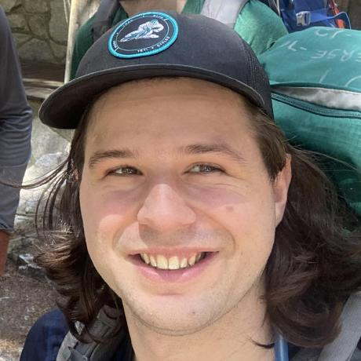

I'm a generalist software engineer who has spent the last 15+ years building for Web, iOS, and more.
I have deep technical knowledge, experience shipping from zero to production and am a team leader.
he/him
luke@lukebrody.com
Education: BA Computer Science, UC Berkeley
